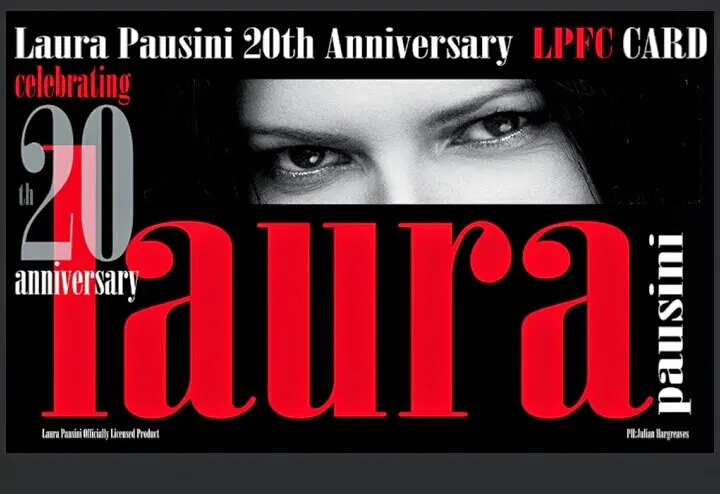

La mia Laura Pausini
Salveeeeee..
Non so voi ma io amo letteralmente Laura Pausini. Dal titolo credo si sia ampiamente capito ihihih
Adoro la sua musica, il suo timbro, i suoi modi, la sua gioia, dolcezza, pazzia, voglia di interagire con il suo pubblico che tanto ama.. È così meravigliosa che amo proprio ascoltarla anche come sottofondo..
Magari non sarete d'accordo con me ma non sapete che vi perdete non ascoltandola ahahahah
SOno stata ad un solo suo concerto qualche anno fa e, wow... è stato lì che me ne sono praticamente innamorata.. per la sua grinta e il suo amore..un amore che ha e che riesce a far sentire a chiunque è lì, in quel momento, nello stesso posto a cantare con lei.. è speciale..
Ed oggi, anzi ieri, 8 marzo, ho fatto finalmente l'iscrizione al fan club *_*
cioè in pratica non ci sto più ndp la pelle per questa cosa da ieri ahahahah
Vi faccio vedere solo un lato del tesserino (l'altro ha codici e dati personali).

Sono emozionatissima ?
Non vedo l'ora che preparano il tour per i nuovi concerti..
Dovremo aspettare un pò credo, perché sta lavorando al nuovo album.. maaaaa noi siamo speranzosi e felici di attendereeee..
Intanto vorrei sapere c'è qualcuno che mi legge o di passaggio che ha la mia stessa passione musicale???
Voglio conoscervi ihihih
Vi saluto con una delle sue canzoni che amo..cioè amo tutte ma c'è qualcuna che mi prende più di tutte..